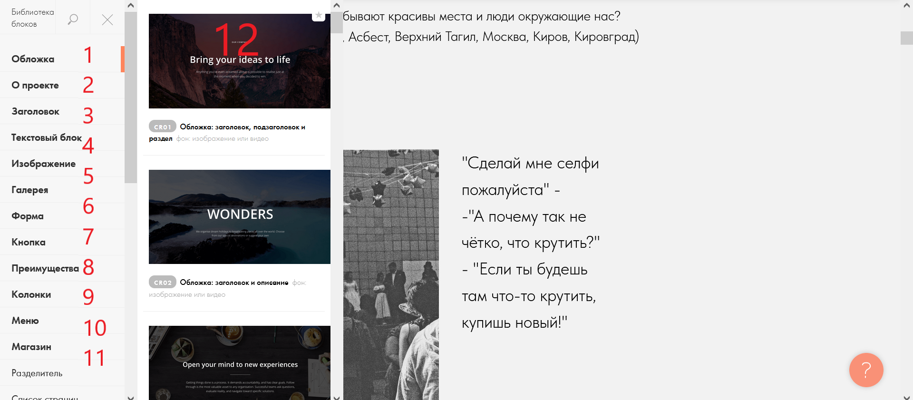

Варианты блоков

Кнопки (1), (2), (3), (4), (5), (6), (7), (8), (9), (10), (11) открывают разные виды шаблонов блока, для улучшения внешнего вида сайта посмотрите все категории и запомните понравившиеся блоки, чтоб добавить блок нажмите на него(12)